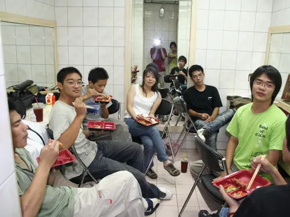
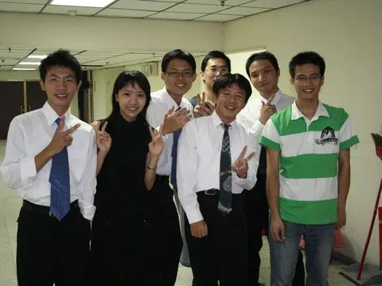
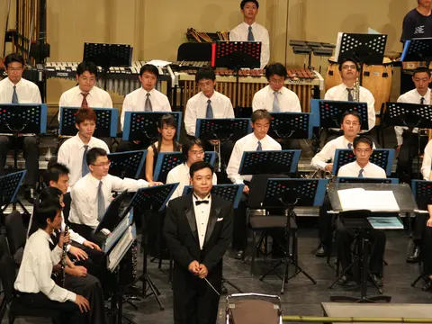
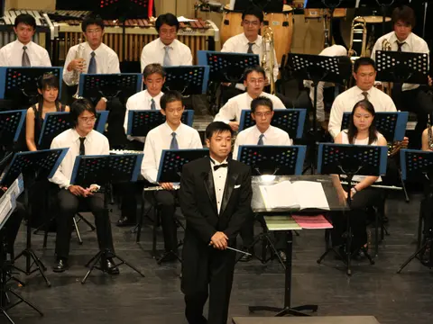
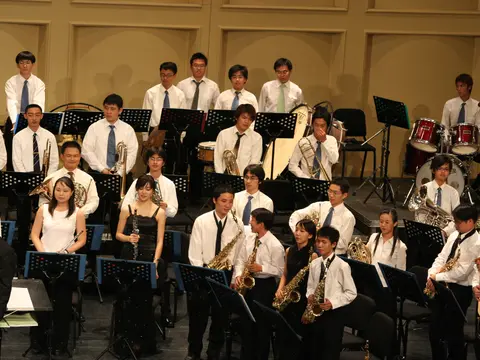
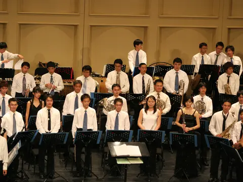
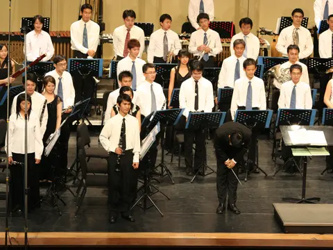

| 屆別 | 第 21 屆 |
|---|---|
| 年度 | 2005（民國 94 年）8 月 28 日 |
| 主題 | 《神話》 |
| 場地 | 依現存照片背景（挑高拱形壁板、專業舞台燈光）推測為正式音樂廳舞台，確切場地名稱待考證 |
| 指揮／曲目 | 資料蒐集中 |
本屆場地、指揮與曲目資訊仍在考證中；若您是當年參與的校友、或留有節目冊等資料，歡迎透過粉絲專頁與我們聯繫，協助補齊這段歷史。
影像紀錄
依拍攝時間排列，從演出前到謝幕。點擊照片可放大檢視。








本頁照片為原始相簿的精選；如有其他珍貴影像歡迎提供補充。
本頁照片由校友提供之原始相簿整理而成，拍攝時間依相片 EXIF 記錄；場地、指揮、曲目等文字資訊仍待進一步查證與校友補充，如需更正請透過粉絲專頁與我們聯繫。